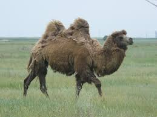

The four llamas and two camels are camelids tend to be large and are strictly herbivorous. Camelids differ from ruminants in several ways. They have a three- chambered rather than a four-chambered digestive tract; an upper lip that is split in two with each part separately mobile; and an isolated incisor in the upper jaw. They have long legs that, because they lack tensor skin to bridge between thigh and body, look longer still. (from Wikipedia)
|  |
Camelid comparison |
|||
|---|---|---|---|---|
| # of humps | indigenous region | spits? | produces wool? | |
| Camels(bacterian) | 2 | africa/asia | Llama | Llama |
| Llamas | 1 | andes mountains | ||